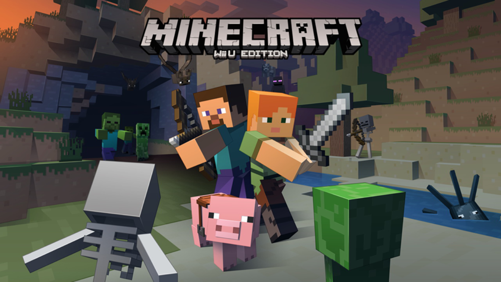

Friends
Account Not Ready
Incoming
Outgoing
World
準備完了後にワールドを表示します。
Settings
Updates
将来の更新機能の設定です。現在は設定の保存のみ対応し、更新の確認・ダウンロード・インストールは行いません。
設定を読み込んでいます。
Launcher Information
- Launcher Version
- 取得待ち
- Minecraft
- Wii U Edition · v560
- Core
- 準備中
Controller
- Emulated Controller
- Wii U GamePad
- Input API
- SDLController
- 現在の設定
- 取得待ち
準備完了後とゲーム実行中に変更できます。
Controller Input Test
Left Stick
Right Stick
小さい点：生入力 · 明るい点：適用後 · 中央の円：Deadzone
ZL 0.00 / ZR 0.00
変更はドラッグ終了時に保存されます。接続中の1台をプレイヤー1へ割り当てます。複数台を識別できない場合は一覧から選択してください。
Native Graphics
ゲームの起動準備を待っています。
ゲーム停止後に変更できます。
- 現在の設定
- 取得待ち
設定を読み込んでいます。
音声設定は実行中にも反映されます。Intro Sound は次回Playから適用します。Microphoneはゲームが入力を要求したときに使用します。
設定を読み込んでいます。
変更はゲーム実行中にも反映され、自動保存されます。Debug Information は描画APIが提供する情報を表示します。Friends は通知の表示設定で、オンライン接続を開始しません。
Active Account
Network Service
ゲーム通信はPlay後に選択したサービスで開始します。
Coreの準備を待っています。